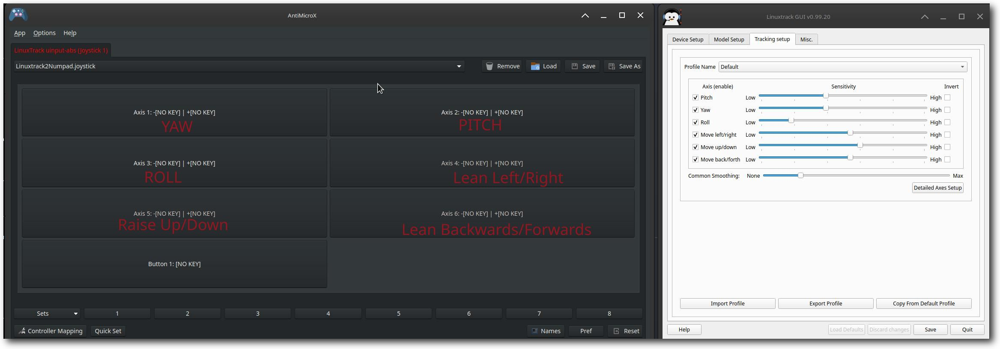
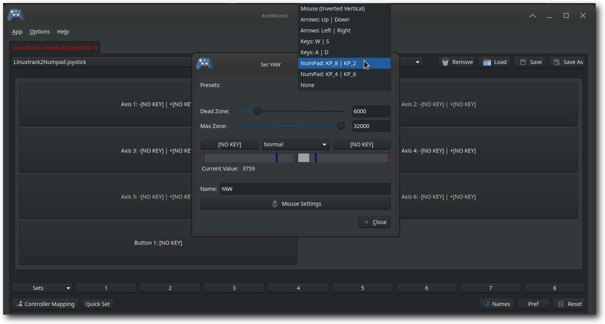

This tab is for special uses of Linuxtrack. Most users should use the Tracking Window for starting Linuxtrack. Use the Start/Stop buttons in the Tracking Window to run head tracking for normal use.
The Advanced tab provides the Linuxtrack Server (ltr_pipe) controls for special output formats such as uinput-abs for AntiMicroX, FlightGear, IL-2 Shturmovik, and Silent Wings. It also provides the OpenTrack / FreeTrack UDP section (ltr_udp) for games that speak the OpenTrack UDP protocol (for example X4 Foundations). Use this tab when you need one of these specific output modes.
|
|
The Linuxtrack Server section controls the head tracking data output format and server status:
Dropdown: "Format" - Select the output format for head tracking data.
Available formats:
Text Field: "Device Name (Info Only)" - Shows the current device name (e.g., "tir1").
Purpose: Displays the virtual device name that will be created for head tracking input.
Buttons:
Status Message: Shows the current server status (e.g., "Ready", "Running", "Paused", "Stopped").
Purpose: Provides real-time feedback about the Linuxtrack server state.
The OpenTrack / FreeTrack UDP section runs ltr_udp, which sends head-tracking pose data over UDP in an OpenTrack-compatible or FreeTrack-compatible packet format.
Typical use: native Linux games that wait for an OpenTrack UDP connection (default destination 127.0.0.1:4242), such as X4 Foundations with head tracking enabled.
127.0.0.1)4242)Translation values are sent in centimeters for OpenTrack packets. Rotation values are degrees. Prefer localhost unless you intentionally stream pose data to another machine on your network.
ltr_udp (enabled only when tracking is already running)ltr_udp
Status text shows whether packets are being sent (for example Sending OpenTrack data to 127.0.0.1:4242) or Stopped.
You can also run the same tool from a terminal: ltr_udp --ip=127.0.0.1 --port=4242. See man ltr_udp after install.
Here's a comprehensive example workflow for setting up head tracking using the Linuxtrack server with various gaming scenarios:
LinuxTrack includes a powerful feature that allows you to use head tracking with games that don't natively support TrackIR by using AntiMicroX to translate head movements into keyboard, mouse, or joystick inputs.
Install AntiMicroX: Most Linux distributions include AntiMicroX in their software repositories. Install it using your package manager or visit https://antimicrox.github.io/ for more information.
Launch Linuxtrack GUI: Start the Linuxtrack GUI application first.
Open the Advanced tab: Switch to the Advanced tab in the main window.
Set Output Format: In the Linuxtrack Server section, set the Format to "uinput-abs (Antimicrox)".
Start Server: Click "Start" in the Linuxtrack Server section to begin joystick emulation mode.
Launch AntiMicroX: Start AntiMicroX. You should see "LinuxTrack uinput-abs (Joystick 1)" appear in the device list.
|
 |
Axis Mapping: AntiMicroX will recognize the following Linuxtrack axes:
Jane's Longbow 2 (PCEM): Map Yaw and Pitch axes to number keypad keys (KP_4/KP_6 for yaw, KP_8/KP_2 for pitch). Adjust head movement speed in the game's ca.ini file.
MechWarrior 2 (DOSBox): Map Pitch and Yaw axes to mouse movement for torso view and targeting reticle control.
Flight Simulators: Map axes to joystick inputs for realistic flight control.
Dead Zone: Set appropriate dead zones to prevent unwanted movement from small head motions.
Max Zone: Adjust maximum zone to control the sensitivity of head movements.
Profiles: Save different profiles for different games to quickly switch between configurations.
|
 |
Axis Configuration: Click on any axis to open the configuration dialog. Here you can set dead zones, maximum zones, and map the axis to keyboard keys, mouse movements, or other joystick inputs. The example shows YAW axis configuration with number keypad mapping (KP_8/KP_2 for up/down movement).
If the Linuxtrack server fails to start: Ensure tracking is working in the Tracking Window first. The server uses the same tracking pipeline.
If the correct output format is not selected: Choose the format before clicking Start. Format cannot be changed while the server is running.
If OpenTrack / FreeTrack UDP Start is disabled: Start tracking in the Tracking Window first. ltr_udp requires an active tracker.
If a game does not receive OpenTrack data: Confirm the destination is 127.0.0.1:4242 (or the IP/port the game expects), that status shows sending, and that no other local listener is bound exclusively to that port while the game needs it.
For Wine Bridge, prerequisites, and game integration, see the Gaming Tab and TrackIR Firmware/Wine Integration Setup guide.